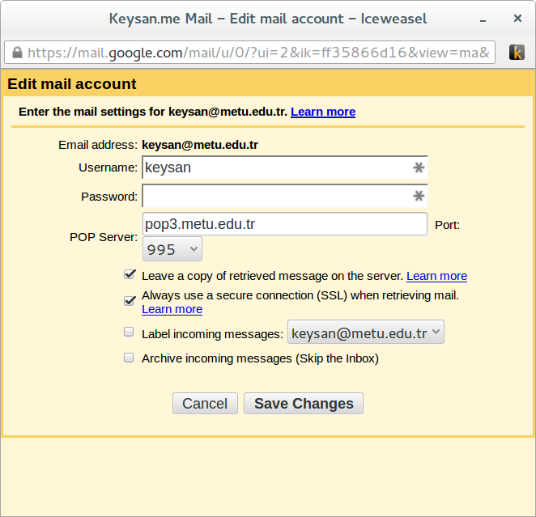

class: center ## IS500 #1: İletişim Araçları <img src="http://www.phdcomics.com/comics/archive/phd012916s.gif" alt="Drawing" style="width: 750px;"/> ### Ozan Keysan [http://keysan.me](http://keysan.me) --- # Email <img src="http://i1-linux.softpedia-static.com/screenshots/Horde-Groupware-Webmail-Edition_1.png" alt="Drawing" style="width: 750px;"/> --- # Email ## Kısa bir anket? -- - ### Horde Mail -- - ### Squirrel Mail -- - ### Outlook -- - ### Thunderbird -- - ### GMail --- ## Editörün Seçimi: [Gmail](https://mail.google.com) <img src="http://www.hacksbundle.com/wp-content/uploads/gmail-inbox.jpg" alt="Drawing" style="width: 200px;"/> ## 2. seçenek: [Thunderbird](https://www.mozilla.org/en-US/thunderbird/) <img src="http://emailmafia.net/wp-content/uploads/2015/07/thunderbird_logo-only_RGB.png" alt="Drawing" style="width: 200px;"/> --- # METU Mail kurulumu -- ### 1. Gmail hesabı açalım(ya da olanı açalım) -- ### 2. Settings --> Accounts -- ### 3. Check email from other accounts (using POP3):Add a POP3 mail account -- ### 4. Mail adresimizi girelim. --- # Email:  --- ## Giden Mail Kurulumu -- ### 1. Send mail as -- ### 2. Add another email address that you own -- ### 3. Mail is sent through: smtp.metu.edu.tr, Port: 587 (TLS) --- # Gmail Arama Yöntemleri: - ## from: - ## to: - ## has:attachment - ## in: ## [Advanced Search](https://support.google.com/mail/answer/7190?hl=en) --- # Gmail Upgrades ### Gelen Kutusu Türünü Seçin <img src="https://zapier.cachefly.net/storage/photos/84a83437de1542cfa62882fc93f86801.png" alt="Drawing" style="width: 600px;"/> [Optimize your Gmail](https://zapier.com/blog/organize-search-automate-gmail-inbox/) --- # Gmail Upgrades ## Enable Undo Send <img src="http://phdcomics.com/comics/archive/phd083115s.gif" alt="Drawing" style="width: 600px;"/> --- # Gmail Upgrades ## İmza Ayarları <img src="http://www.mountrantmore.com/wp-content/uploads/2015/01/Funny-Email-Signatures-Meme.png" alt="Drawing" style="width: 500px;"/> --- # Gmail Upgrades ## Labs - ### Calendar Gadget - ### Unread message icon - ### Preview Pane - ### [Google Inbox](https://www.google.com/inbox/) [Optimize your Gmail](https://zapier.com/blog/organize-search-automate-gmail-inbox/) --- # Gmail Upgrades: Filters <img src="http://www.phdcomics.com/comics/archive/phd101211s.gif" alt="Drawing" style="width: 750px;"/> --- # Zaman Yönetimi <img src="http://phdcomics.com/comics/archive/phd101514s.gif" alt="Drawing" style="width: 800px;"/> --- # Zaman Yönetimi ## [Google Calendar](https://calendar.google.com) <img src="https://lh3.googleusercontent.com/1fLFHiN0styGRBRNyOok0ySL0EbBIyCnXxZcfCW6UGL1Lmx6noMFn0ak7pvfGVKigDYUfyWHDcs=s640-h400-e365" alt="Drawing" style="width: 500px;"/> ### Alternatives: ICalendar, [Thunderbird Lightning](https://www.mozilla.org/en-US/projects/calendar/) --- ## Google Calendar Exercises - ### [Akademik takvimi](http://oidb.metu.edu.tr/akademik-takvim) kendi takviminize ekleyin -- - ### Yanınızdaki kişiye bir toplantı [davetiyesi](https://support.google.com/calendar/answer/37161?hl=en) yollayın. -- - ### Takvimininizi bir kişiyle [paylaşın](https://support.google.com/calendar/answer/37082?hl=en). -- - ### Toplantı vakti ayarlamak için [Doodle](http://doodle.com/) kullanın --- # Email Alternatifi -- : [Glip](https://glip.com/) <img src="http://core0.staticworld.net/images/article/2013/10/glip-screen-for-web-100057969-large.png" alt="Drawing" style="width: 600px;"/> #### Diğer alternatifler: [Slack](https://slack.com/), [Bitrix24](https://www.bitrix24.com/), [Mattermost](http://www.mattermost.org/) --- # Thank you! ### You can download this presentation from: [keysan.me/is500](http://keysan.me/is500)